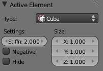

简介¶
参考
Shift-AMeta objects are implicit surfaces, meaning that they are not explicitly defined by vertices (as meshes are) or control points (as surfaces are): they exist procedurally. Meta objects are literally mathematical formulas that are calculated on-the-fly by Blender.
A very distinct visual characteristic of metas is that they are fluid mercurial, or clay-like forms that have a “rounded” shape. Furthermore, when two meta objects get close to one another, they begin to interact with one another. They “blend” or “merge”, as water droplets do, especially in zero-g (which, by the way, makes them very handy for modeling streams of water when you do not want to do a fluid simulation). If they subsequently move away from one another, they restore their original shape.
Each of these is defined by its own underlying mathematical structure (Technical Details), and you can at any time switch between them using the 活动元素 panel.
Typically Meta objects are used for special effects or as a basis for modeling. For example, you could use a collection of metas to form the initial shape of your model and then convert it to a mesh for further modeling. Meta objects are also very efficient for ray-tracing.
Note
Meta objects have a slightly different behavior in 物体模式.
Primitives¶
There are five predefined meta “primitives” (or configurations) available in the sub-menu:
- Meta Ball
- adds a meta with a point underlying structure.
- Meta Tube
- adds a meta with a line segment underlying structure.
- Meta Plane
- adds a meta with a planar underlying structure.
- Meta Ellipsoid
- adds a meta with an ellipsoidal underlying structure.
- Meta Cube
- adds a meta with a volumetric cubic underlying structure.
Visualization¶
In 物体模式, the calculated mesh is shown, along with a black “selection ring” (becoming pink when selected).
{kind=link}
In 编辑模式 (Meta Ball example), a meta is drawn as a mesh (either shaded or as black wireframe,
but without any vertex of course), with two colored circles: a red one for selection (pink when selected),
and a green one for a direct control of the meta’s stiffness (light green when active).
Note that except for the Scale S transformation,
having the green circle highlighted is equivalent to having the red one.
Meta Ball Options¶
All Meta objects in a scene interact with each other. The settings in the MetaBall section apply to all meta objects. In 编辑模式, the 活动元素 panel appears for editing individual meta elements.

individual meta properties. |
{kind=link}
{kind=link}
Resolution¶
The Resolution controls the resolution of the resultant mesh as generated by the
- Meta
- object.
- View
- The 3D视图 resolution of the generated mesh. The range is from (0.05 to 1.0) (finest to coarsest).
- 渲染
- The rendered resolution of the generated mesh. The range is from (0.05 to 1.0) (finest to coarsest).
One way to see the underlying mathematical structure is to lower the Resolution, increase the Threshold and set the Stiffness (see below) a fraction above the Threshold. Fig. Underlying. is a Meta cube with the above mentioned configuration applied as follows: Resolution of 0.410, Threshold of 5.0 and Stiffness a fraction above at 5.01.
{kind=link}
You can clearly see the underlying cubic structure that gives the meta cube its shape.
Threshold (Influence)¶
参考
Threshold defines how much a meta’s surface “influences” other metas. It controls the field level at which the surface is computed. The setting is global to a group of Meta objects. As the threshold increases, the influence that each meta has on each other increases.
There are two types of influence: positive or negative. The type can be toggled on the 活动元素 panel while in 编辑模式, using the Negative button. You could think of positive as attraction and negative as repulsion of meshes. A negative meta will push away or repel the meshes of positive Meta objects.
{kind=link}
A positive influence is defined as an attraction, meaning the meshes will stretch towards each other as the rings of influence intersect. Fig. Positive. shows two meta balls’ rings of influence intersecting with a positive influence.
Notice how the meshes have pulled towards one another. The area circled in white shows the green influence rings intersecting.
Update¶
While transforming metas (grab/move, scale, etc.), you have four “modes” of visualization, located in the Update buttons group of the MetaBall panel:
- Always
- fully draw the meta during transformations.
- Half Res
- During transformations, draw the meta at half its Wiresize resolution.
- Fast
- Do not show meta mesh during transformations.
- Never
- Never show meta mesh (not a very recommended option, as the meta is only visible at render time!).
This should help you if you experience difficulties (metas are quite compute-intensive...), but with modern computers, this shouldn’t happen, unless you use many metas, or very high resolutions...
Meta Structure¶
Technical Details¶
A more formal definition of a meta object can be given as a directing structure which can be seen as the source of a static field. The field can be either positive or negative and hence the field generated by neighboring directing structures can attract or repel.
The implicit surface is defined as the surface where the 3D field generated by all the directing structures assume a given value. For example a meta ball, whose directing structure is a point, generates an isotropic (i.e. identical in all directions) field around it and the surfaces at constant field value are spheres centered at the directing point.
Meta objects are nothing more than mathematical formulae that perform logical operations on one another (AND, OR), and that can be added and subtracted from each other. This method is also called Constructive Solid 几何体 (CSG). Because of its mathematical nature, CSG uses little memory, but requires lots of processing power to compute.
Underlying Structure¶
参考
Blender has five types of metas, each determined by its underlying (or directing) structure.
In 编辑模式, you can change this structure,
either using the relevant buttons in the MetaBall tools panel,
or the drop-down list in the 变换 Properties panel N.
Depending on the structure, you might have additional parameters,
located in both 变换 Properties and MetaBall tools panels.
- Ball (point, zero-dimensional structure)
- This is the simplest meta, without any additional setting. As it is just a point, it generates an isotropic field, yielding a spherical surface (this is why it is called Meta Ball or Ball in Blender).
- Tube (straight line, uni-dimensional structure)
This is a meta which surface is generated by the field produced by a straight line of a given length. This gives a cylindrical surface, with rounded closed ends. It has one additional parameter:
- dx
- The length of the line (and hence of the tube - defaults set to 1.0).
- Plane (rectangular plane, bi-dimensional structure)
This is a meta which surface is generated by the field produced by a rectangular plane. This gives a parallelepipedal surface, with a fixed thickness, and rounded borders. It has two additional parameters:
- dx, dy
- The length, width of the rectangle (defaults set to 1.0).
Note that by default, the plane is a square.
- Elipsoid (ellipsoidal volume, tri-dimensional structure)
This is a meta which surface is generated by the field produced by an ellipsoidal volume. This gives an ellipsoidal surface. It has three additional parameters:
- dx, dy, dz
- The length, width, height of the ellipsoid (defaults set to 1.0).
Note that by default, the volume is a sphere, producing a spherical meta, as the Ball option...
- Cube (parallelepipedal volume, tri-dimensional structure)
This is a meta which surface is generated by the field produced by a parallelepipedal volume. This gives a parallelepipedal surface, with rounded edges. As you might have guessed, it has three additional parameters:
- dx, dy, dz
- The length, width, height of the parallelepiped (defaults set to 1.0).
Note that by default, the volume is a cube.
{kind=link}